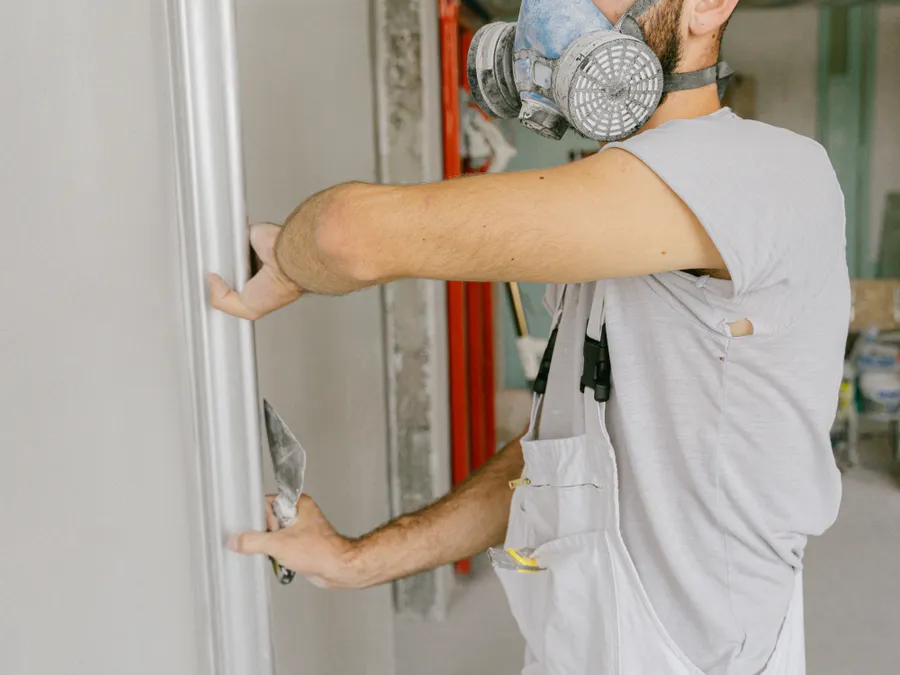

2025Tillbyggnad i två plan
Solna · 2025Vi byggde på 28 m² i två plan mot trädgården och förstärkte grunden innan stommen restes. Bottenvåningen fick nytt kök, övre planet två sovrum, och elen drogs om för hela tillbyggnaden.
- Yta 28 m²
- Tidsplan 11 veckor
- Slutkostnad 690 000 kr